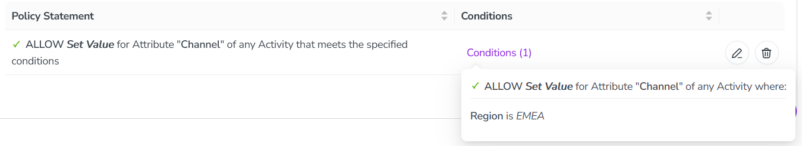
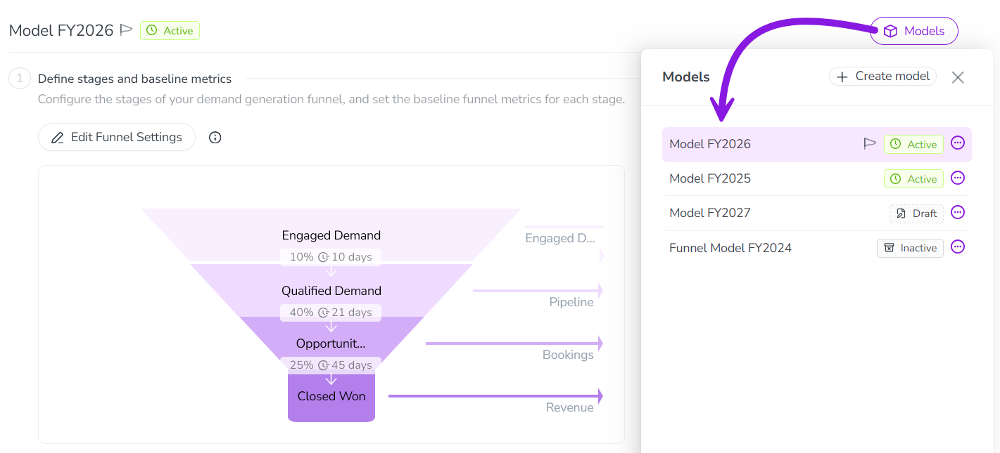
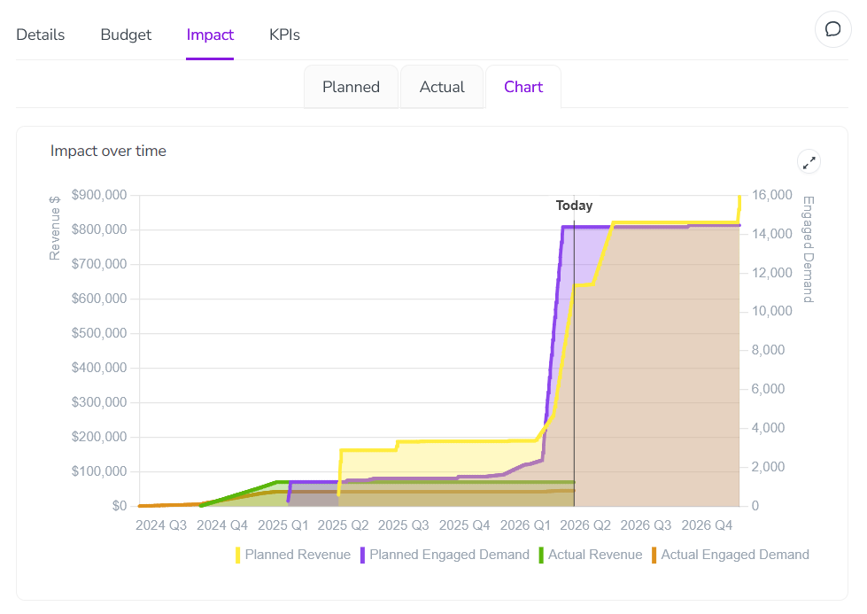
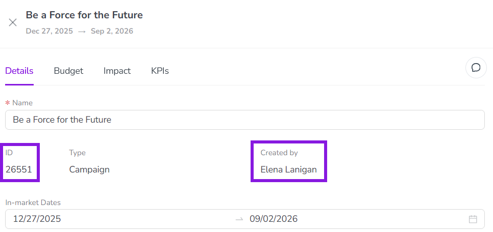
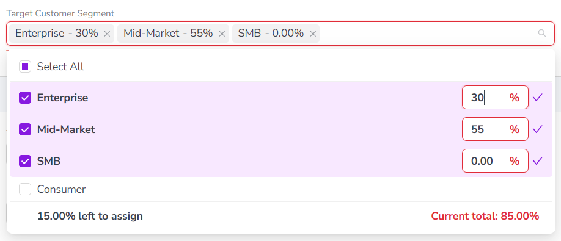
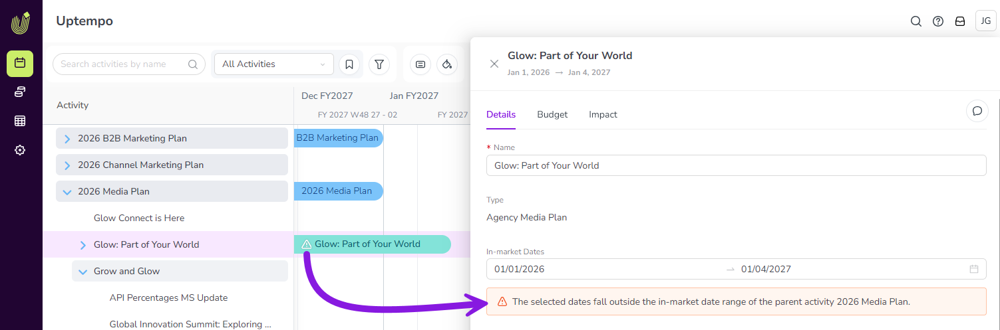

What's new: 2026.4
Discover all the new Uptempo functionality introduced with the 2026.4 release, available from April 29, 2026.
Campaign Management: Activity Configuration
Support for activity attributes in access controls
Uptempo's activity access control system now supports permissions based on activity attributes and their values, giving you fine-grained control over your data governance.
Restrict editing for individual attributes: Limit who can edit specific attribute values to ensure only authorized users can change important data. Restricted attributes remain visible in the details panel as read-only fields for users without edit access.
Make attribute edit access dynamic: Control who can edit a specific attribute based on the activity's type, or on the values of other attributes. For example, you can allow a user to update the Channel attribute only for Tactic activity types, or only if the Region attribute is set to EMEA.
{kind=link}

→ Learn more about available properties for creating access control statements
Update Impact Modeler projections without losing historical data
You can now create additional pipeline models in Impact Modeler, allowing you to update projections for upcoming planning cycles without changing historical data.
Adapt your models over time: Create a new version of your pipeline model for each fiscal year to refine your projections — you can even change or rename funnel stages to match evolving business processes. Set the current model as the default for impact projections on new activities, while keeping previous models in place on past-year activities to preserve historical data.
Manage models easily: Create new pipeline models from scratch, or by copying an existing model. New models stay in draft status until you're ready to roll them out, and can be activated or deactivated at any time.
Support for multiple active models: If you have more than one active model, the Impact section on activities displays a switcher that lets users change between the available active models on the fly — until actual results are pulled in, at which point the model locks to protect your data integrity.
Improved interface and terminology: The Impact Modeler UI has been redesigned to improve usability. In addition to a visual refresh, key terms and help text have been updated for clarity. For example, you now configure "segment-specific metrics" instead of "drill-downs".
{kind=link}

→ Learn more about creating additional models in Impact Modeler
Segment Impact Modeler pipeline models by activity type group
To make your Impact Modeler projections more accurate, pipeline model segments now support activity type groups as a dimension, allowing you to set custom performance metrics for different channels (like events vs. digital) without building attribute workarounds.
Eliminate custom attribute workarounds: You no longer need to create "fake" attributes for segment-defining data that's captured in your activity type groups. When you configure Impact Modeler segments, you can now select any of these groups as one of the three dimensions that define a segment.
Refine your model projections: Apply highly specific conversion rates, velocities, and average deal sizes to distinct activity type groups, ensuring your pipeline projections accurately reflect how different marketing initiatives actually perform in the real world.
→ Learn more about configuring the pipeline model in Impact Modeler
Campaign Management: Activities
Activity Impact section UX enhancements
We've reorganized the Impact section in the activity details panel to make it easier to analyze impact projections.
Impact projection charts on their own tab: You can now find the Impact over time chart on its own dedicated Chart tab, making the Planned tab less cluttered and easier to navigate.
Funnel visualization always visible: The demand pipeline funnel visualization is now displayed automatically on the Planned tab, so it's easier to find.
{kind=link}

→ Learn more about analyzing the pipeline impact of your activities
Identify and search for activities faster
You can now search for activities by their unique ID and see the activity's creator, making it easier to quickly identify and locate specific activities in your hierarchy.
See activity IDs in the details panel: Each activity's system-generated ID is now displayed directly in its details panel, making it much easier to find and copy when cross-referencing activities with connected systems.
Search by activity ID: You can now search for any activity by its unique activity ID, helping you quickly distinguish between activities that have similar or identical names.
Easily identify an activity's creator: A new Created By field on the details panel clearly identifies the user who created the activity.
{kind=link}

Track percentage allocation totals on multi-select attributes
On multi-select attributes with percentage allocation, you can now easily see the total allocated percentage and the exact amount over or under 100%, making it easier to ensure your percentage allocations for each selected option are set correctly.
Track percentage totals: When you're allocating percentage shares across multiple selected attribute options, the system now displays the total sum of your allocations. This helps you quickly identify exactly how much your current allocation is over or under 100%.
Quickly select all options: A new Select All option allows you to choose all available options for a multi-select attribute at once.
{kind=link}

→ Learn more about the Percentage Allocation option on Multi-Select Attributes
Improved visibility for in-market date errors
To help ensure that in-market dates are set correctly on all activities, the system now displays a warning when a child activity's in-market dates fall outside the parent activity's date range.
Highly visible warnings: Warnings are displayed in the activity setup assistant, in the activity details panel, and on activity bars on the Timeline, making it easy to identify activities that have incorrectly set in-market dates.
Improved data consistency: Whenever users set in-market dates, immediate feedback helps them to correct errors right away, ensuring accurate and consistent data entry.
{kind=link}

Financial Management: Investments
Creator tracking for investment line items
The system now automatically records the creator of investment items, making it easier to identify the origin of financial records.
A new Created by field is now displayed on the details panel of each investment category, sub-category, and line item. When a user adds an item to the investment hierarchy, the system automatically populates the Created by field with their identity, making this information directly visible on the investment item itself (instead of only in the audit trail).
Organization Settings
Limit access to approved IP addresses only
You can now configure your Uptempo instance to only allow users with approved IP addresses to sign in.
Restrict access to secure networks: Use the IP Allowlist to specify exactly which IP addresses are allowed to access your Uptempo instance, ensuring that only users on your corporate VPN or other approved networks can reach sensitive data.
Mitigate the risk of credential leaks: Prevent unauthorized access even in the event of a password leak, as login attempts from unrecognized networks are automatically blocked.
Flexible configuration: Configure allowed IPs using individual IPv4 or IPv6 addresses, or broad CIDR ranges, providing the flexibility to support complex infrastructures.

→ Learn more about restricting access to your Uptempo instance based on IP address